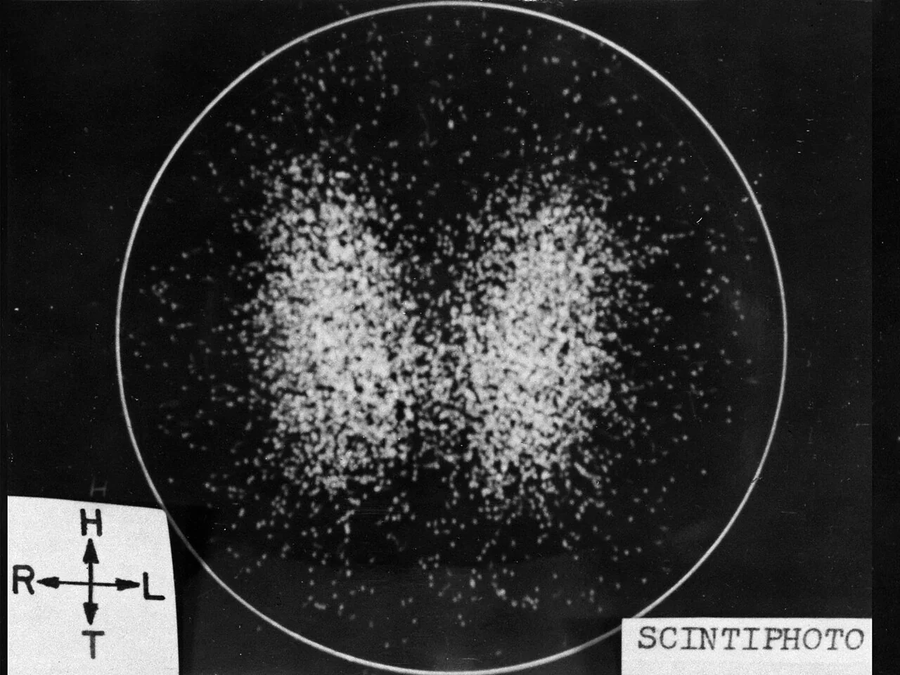
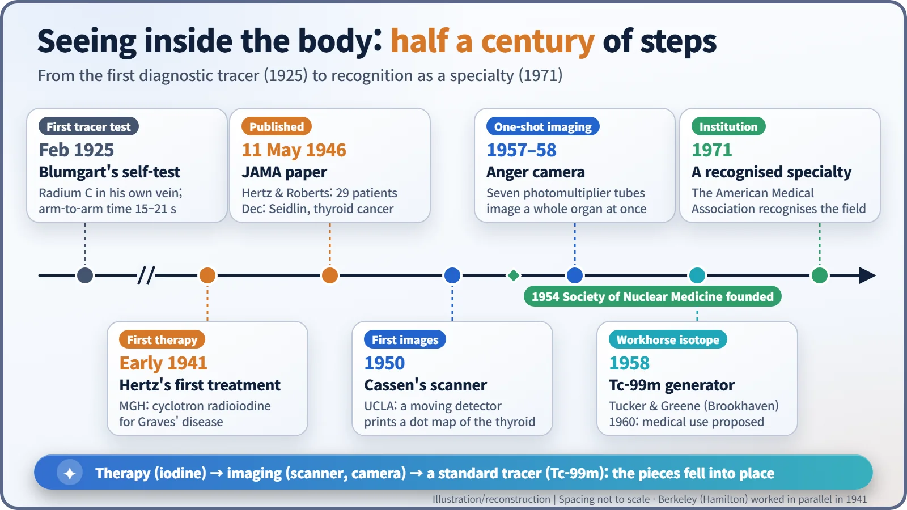
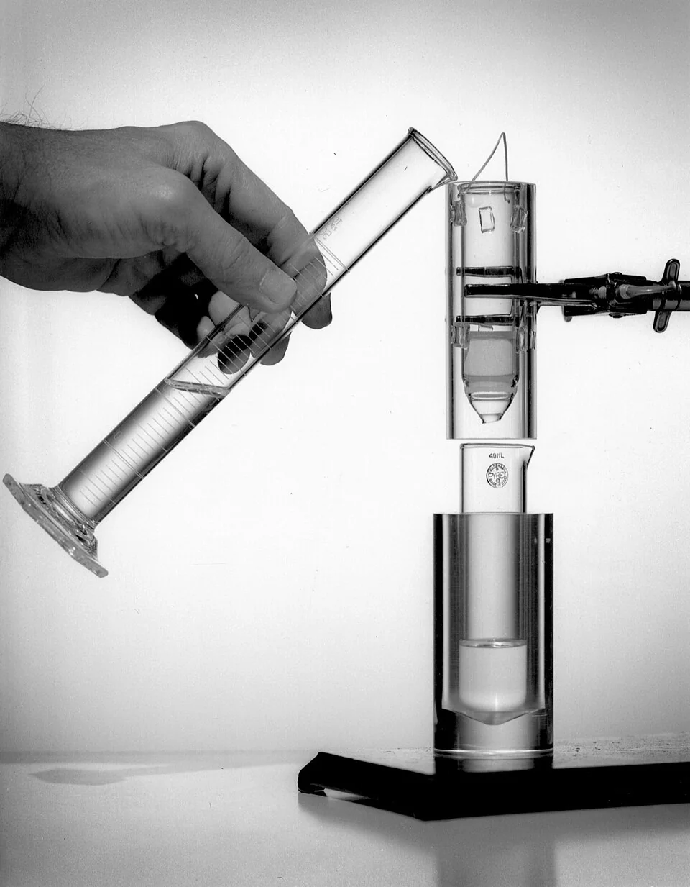
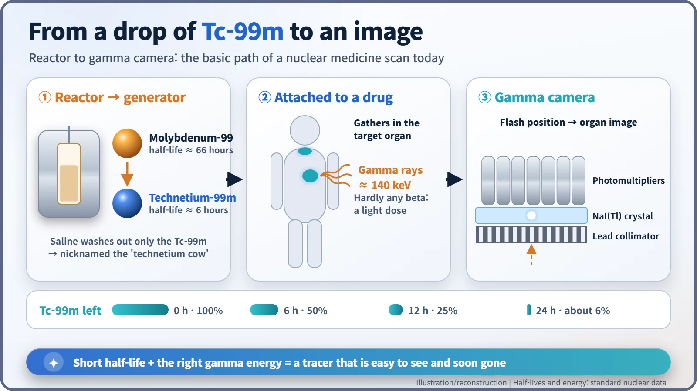

Nuclear History · 195
The Lead Pot That Gets "Milked" Every Morning — The Birth of Nuclear Medicine
From a doctor timing radioactive atoms through his own bloodstream to tens of millions of technetium-99m scans a year.
Nuclear medicine grew from a doctor timing radioactive atoms through his own bloodstream in 1925 into one of medicine's everyday tools. Radioiodine therapy (1941), Cassen's scanner (1950), Anger's gamma camera (1957–58) and Brookhaven's technetium-99m generator (1958) each supplied a missing piece. Today tens of millions of scans a year rely on Tc-99m.
A lead pot that gets milked every morning
Every morning in a large hospital's nuclear medicine department, someone performs a small ritual. They run saline through a lead container about the size of a thermos flask and collect a few millilitres of clear liquid from the other side. Staff call the container a "cow", because it is milked daily — not for milk, but for radioactive atoms. That liquid will light up the insides of the day's patients, from bones to beating hearts. Getting to this routine took about half a century.
A needle in his own arm
The story starts before the nuclear reactor. In February 1925, the Boston physician Hermann L. Blumgart (1895–1977) injected "radium C" into a vein in his own arm. Despite the name it was not radium but bismuth-214, a decay product of radon with a half-life of about 20 minutes. Against his other arm sat a modified cloud chamber, a device that makes the tracks of radiation visible. Blumgart was timing how long the injected atoms took to travel through the bloodstream from one arm to the other. [1]
The results, published in 1926, were telling: 15–21 seconds in people with healthy hearts, 50–65 seconds in patients whose hearts were failing. It was the first diagnostic test in which radioactive atoms placed inside a person revealed something about their illness from outside the body. [1]
"Could iodine be made radioactive artificially?"
In 1936, Saul Hertz (1905–1950), a thyroid specialist at Massachusetts General Hospital (MGH), is said to have put exactly this question to Karl Compton, president of MIT, after a lecture: "Could iodine be made radioactive artificially?" The thyroid gland soaks up iodine to make its hormones. Radioactive iodine, Hertz reasoned, could aim at the thyroid and almost nothing else. The answer came back: "Iodine could be made artificially radioactive." [5]
Working with the MIT physicist Arthur Roberts, Hertz completed animal studies using radioiodine from MIT's new cyclotron. Then, in early 1941 (the date usually given is 31 March), he gave the first treatment to a patient with Graves' disease, an overactive thyroid. The beta radiation from iodine collected in the gland shrinks the overworking tissue from the inside. At around the same time, Joseph G. Hamilton and John H. Lawrence's group at Berkeley was pursuing the same treatment, so the "first" is fairly shared between two teams rather than claimed by one name. [5]
On 11 May 1946, after the war, Hertz and Roberts reported their results in 29 patients in the Journal of the American Medical Association (JAMA). In December the same year, Samuel M. Seidlin's team in New York described in the same journal how radioiodine had treated thyroid cancer that had spread through a patient's body. Just then, reactors at Oak Ridge began turning out isotopes in quantity, and radioactive iodine started to become an everyday hospital drug. [2] [5]
From pointillism to snapshots
Treatment came first; seeing followed. In 1950, the UCLA physicist Benedict Cassen built a "rectilinear scanner": a motor swept a radiation detector back and forth over the patient and a printer tapped a dot onto paper with each signal. Outlining a thyroid by moving a probe by hand had taken 60 to 90 minutes. The machine took over the drudgery, but the result was still a picture built up dot by dot, line by line, like a pointillist painting. [5]
The game changer was Hal O. Anger (1920–2005) at Berkeley's Donner Laboratory. In 1957 he built a "scintillation camera": a broad, flat sodium iodide crystal topped by seven photomultiplier tubes. When a gamma ray strikes the crystal it makes a tiny flash; comparing how much of that light reaches each tube tells you where the flash happened. Anger published the design the following January. It captured a whole organ in one image, and it is the ancestor of today's gamma camera. [3]


The "cow" nobody bothered to patent
The last piece was the right material. In 1958 two chemists at Brookhaven National Laboratory, Walter Tucker and Margaret Greene, were separating a different isotope when they noticed technetium-99m (Tc-99m) turning up as a contaminant. They built a generator to extract it. Molybdenum-99 made in a reactor (half-life about 66 hours) sits on a column and steadily decays into Tc-99m; rinsing the column with saline washes out the Tc-99m alone. The laboratory reportedly did not even file a patent, because it saw no obvious market. [4] [6]

The person who saw its value was Powell Richards, who ran isotope production at Brookhaven. In 1960 he was the first to propose Tc-99m as a medical tracer, and in the early 1960s Paul V. Harper and colleagues at the University of Chicago showed what it could do in the clinic. Its half-life of about six hours means it fades quickly once a scan is done, and its gamma rays, at about 140 keV, escape the body easily and suit the Anger camera perfectly. After a day, only about 6% of the starting amount is left. [4] [6]

Tens of millions of pictures a year
The field organised itself quickly. The Society of Nuclear Medicine was founded in 1954, and in 1971 the American Medical Association recognised nuclear medicine as a medical specialty. According to Brookhaven in 2018, more than 40 million patients a year undergo Tc-99m or similar isotope imaging, and Tc-99m accounts for about 80% of the world's nuclear medicine imaging procedures. Other sources give somewhat different figures depending on what they count. [4] [5]
Reactors did not only make material for weapons. The lead pot in the nuclear medicine department quietly proves it every morning.